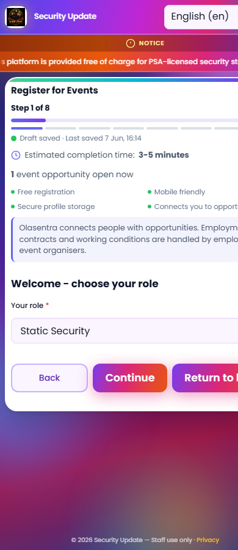
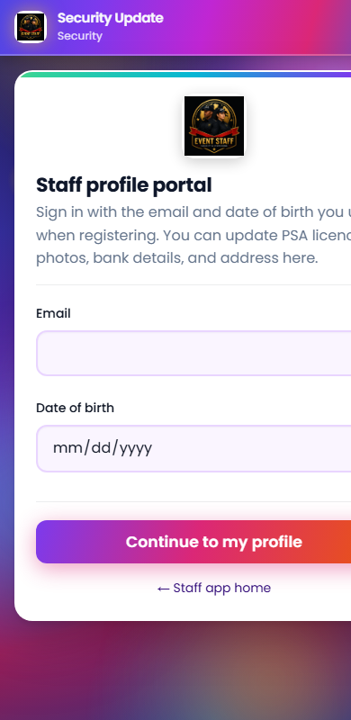
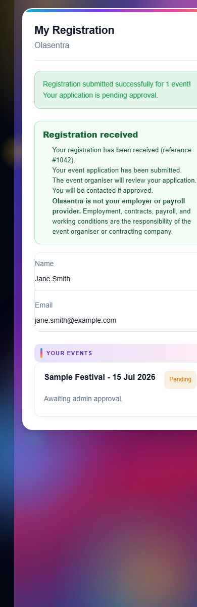
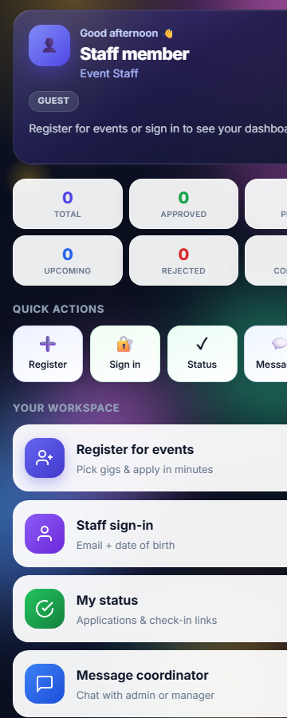
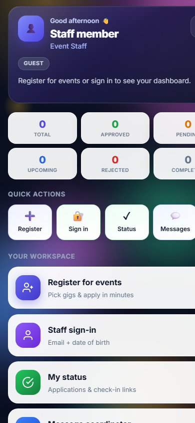
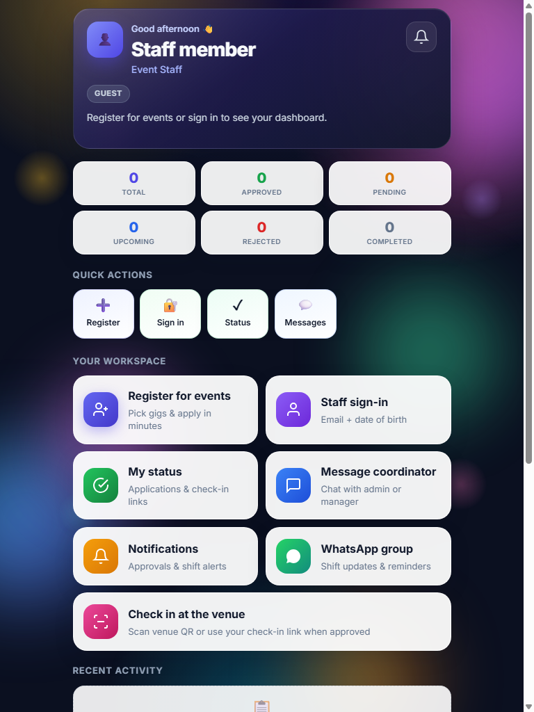
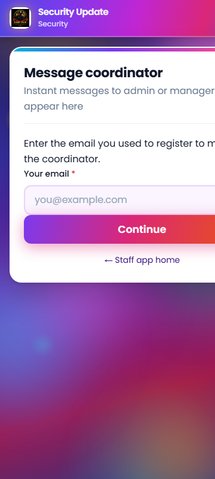
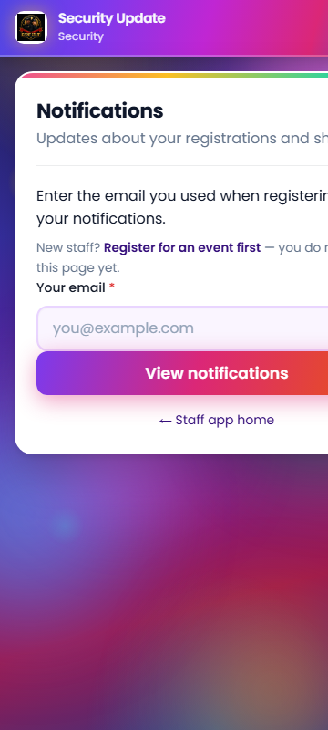
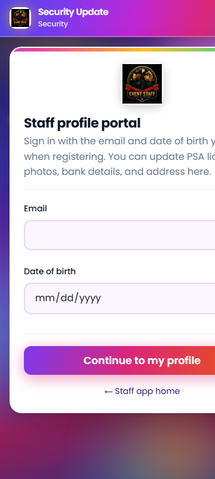
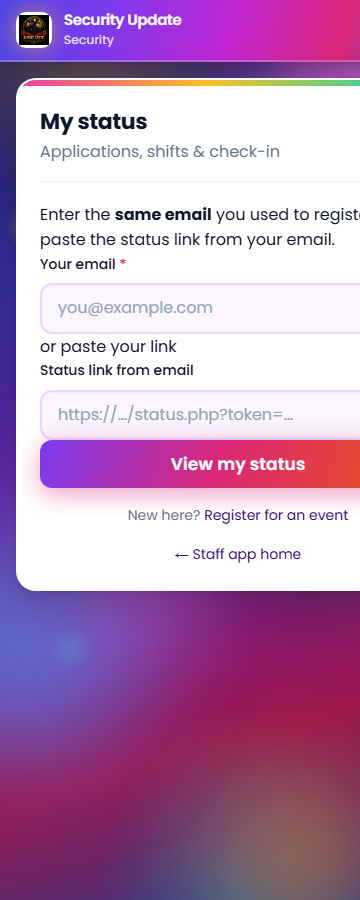

TASK 1: PASS
GPS Phase 1.5 verification ---------------------------------------- PASS getGpsRequiredMessage() PASS getGpsMaxAccuracyMeters default PASS validateGps rejects null coords PASS validateGps rejects outside zone PASS validateGps accepts in-zone + accuracy PASS validateGps rejects poor accuracy PASS canActivateWithGpsProof rejects stale GPS PASS canActivateWithGpsProof accepts fresh in-zone GPS PASS api/attendance-gps-ping.php exists PASS migrate-phase53 SQL exists PASS rollback-phase53 SQL exists PASS attendance.last_gps_at column ---------------------------------------- Passed: 12 Failed: 0
CRON VERIFIED — CRON VERIFIED (endpoint); schedule unconfirmed in cPanel
Recommended cPanel entry (event days, GPS flag ON):
*/5 * * * * curl -fsS "https://register.olasentra.com/cron/attendance-activate.php?key=REMINDER_CRON_KEY" >/dev/null 2>&1
AUTOMATED PASS — signed-in flow requires manual account
Signed-in path (registration → approval → notification → status → check-in → attendance) requires a real staff account with admin approval. Automated checks verified public routes and status preview.
GPS PILOT PASSED (flag toggle + rollback)
Flag toggled via cron/gps-flag-toggle.php; restored to OFF after probe. Full geofence test on a live approved event still requires signed-in staff at venue coordinates.
database/rollback-phase52-gps-attendance-phase1.sql (uploaded to server)database/rollback-phase53-gps-attendance-phase15.sql (uploaded to server)scripts/gps-pilot-signoff.ps1 (verification runner)docs/GPS-PILOT-SIGNOFF-REPORT.html (this report)includes/attendance-gps-phase15.php — missing attendance-repository.php include caused 500 on GPS verify endpointscron/gps-readiness-report.php — missing site-urls.php includecron/verify-gps-phase15.php — web-accessible self-contained verifier (scripts/ blocked by FTP + htaccess)| Task | Check | Status | Detail |
|---|---|---|---|
| Deploy | Sign-off files uploaded | SKIP | -SkipDeploy |
| T1 | Cron key available | PASS | From deploy.local.ps1 or settings backup |
| T1 | gps-readiness-report.php | PASS | READY FOR PILOT |
| T1 | feature_gps_attendance_v2 flag | PASS | OFF (safe default) |
| T1 | migrate-phase52 column: attendance_status | PASS | |
| T1 | migrate-phase52 column: activated_at | PASS | |
| T1 | migrate-phase52 column: check_in_lat | PASS | |
| T1 | migrate-phase52 column: check_in_lng | PASS | |
| T1 | migrate-phase52 column: check_in_accuracy_m | PASS | |
| T1 | migrate-phase52 column: check_in_gps_at | PASS | |
| T1 | migrate-phase53 column: last_gps_lat | PASS | |
| T1 | migrate-phase53 column: last_gps_lng | PASS | |
| T1 | migrate-phase53 column: last_gps_accuracy_m | PASS | |
| T1 | migrate-phase53 column: last_gps_at | PASS | |
| T1 | SQL migrate-phase52 file | PASS | |
| T1 | SQL migrate-phase53 file | PASS | |
| T1 | SQL rollback-phase52 file | PASS | |
| T1 | SQL rollback-phase53 file | PASS | |
| T1 | attendance-activate cron | PASS | |
| T1 | verify-gps-phase15 script | PASS | |
| T1 | GPS ping API | PASS | |
| T1 | Phase 1.5 PHP module | PASS | |
| T1 | reminder_cron_key configured | PASS | set |
| T1 | attendance-activate cron reachable | PASS | OK activated=0 |
| T1 | validateGpsForCheckin logic | PASS | |
| T1 | verify-gps-phase15.php | PASS | https://register.olasentra.com/cron/verify-gps-phase15.php?key=f15e77e3ef597d46994e9b7f1cfccac1 |
| T1 | production-truth-verify.php | PASS | pass=21 fail=0 |
| T2 | attendance-activate reachable | PASS | https://register.olasentra.com/cron/attendance-activate.php?key=f15e77e3ef597d46994e9b7f1cfccac1 → OK activated=0 |
| T2 | cPanel schedule | WARN | Cannot inspect cPanel from automation — operator must confirm every 1–5 min on event days |
| T2 | Last run / next run | WARN | Not exposed by app — confirm in cPanel Cron Jobs |
| T1 | GPS ping rejects GET | PASS | 405 Method not allowed |
| T1 | GPS ping rejects bad POST | WARN | {"ok":false,"error":"GPS attendance is not enabled."} 200 |
| T3 | Registration wizard | PASS | https://register.olasentra.com/index.php |
| T3 | Staff sign-in | PASS | https://register.olasentra.com/staff-portal.php |
| T3 | Staff app (guest redirect) | PASS | https://register.olasentra.com/staff-app.php |
| T3 | Status preview | PASS | https://register.olasentra.com/status-screenshot-preview.php |
| T3 | Notifications API (no session) | FAIL | HTTP 400 |
| T3 | Screenshot 01-registration-wizard.png | PASS | 01-registration-wizard.png |
| T3 | Screenshot 02-staff-signin.png | PASS | 02-staff-signin.png |
| T3 | Screenshot 03-status-preview.png | PASS | 03-status-preview.png |
| T4 | GPS flag status (before) | PASS | flag=0 |
| T4 | Enable feature_gps_attendance_v2 | PASS | Flag ON for pilot probe |
| T4 | Status page GPS UI markers | WARN | Preview may not reflect live GPS JS — verify on signed-in pilot event |
| T4 | Restore GPS flag OFF | PASS | Rollback path L0 verified |










attendance-activate.php not machine-verifiable — operator must confirm before first GPS event dayProceed with controlled pilot: enable feature_gps_attendance_v2 on one approved test event, confirm cPanel cron every 1–5 minutes on event day, run signed-in check-in at venue, then expand rollout.